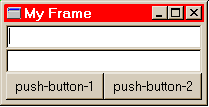

This is a very simple interface builder for DUIM that can be used to build up a top-level DUIM window (a frame) and then generate code for it which can then be compiled and run, or modified by hand.
This is not intended to be a real GUI builder by any stretch of the imagination, but it will hopefully be useful as a learning tool. It is a work in progress.
To build an interface, use the menu item File > New to create a new interface and then use the Edit > Add... and Edit > Remove... menu items to add and remove items from the interface. As you build your interface you will see the hierarchy of UI elements displayed in the main window and the interface itself will be displayed in its own window so you can see what you've built so far.
Note that the Add/Remove commands always operate on the selected item in the hierarchy window. Be sure to select the correct item before using one of the commands. Note that the Add command only makes sense for UI elements that can have children, such as layouts or frames, so if you select (for example) a push button, the Add command will be disabled.
As a first attempt, try the following sequence:

The resulting code looks like this:
Module: my-module
define frame <my-frame> (<simple-frame>)
pane text-field-1 (frame)
make(<text-field>);
pane text-field-2 (frame)
make(<text-field>);
pane push-button-1 (frame)
make(<push-button>);
pane push-button-2 (frame)
make(<push-button>);
layout (frame)
vertically ()
frame.text-field-1;
frame.text-field-2;
horizontally ()
frame.push-button-1;
frame.push-button-2;
end;
end;
keyword title: = "My Frame";
end frame <my-frame>;
Notice that each visible UI element corresponds to a
pane clause in the define frame form.
There is one layout clause which defines how the
panes are arranged on screen. The column-layout and
row-layout were converted into calls to the
vertically and horizontally macros,
respectively.
To see how the code looks when run, you can cut-and-paste it into the Dylan Playground and then use the following expression to start it:
start-frame(make(<my-frame>));